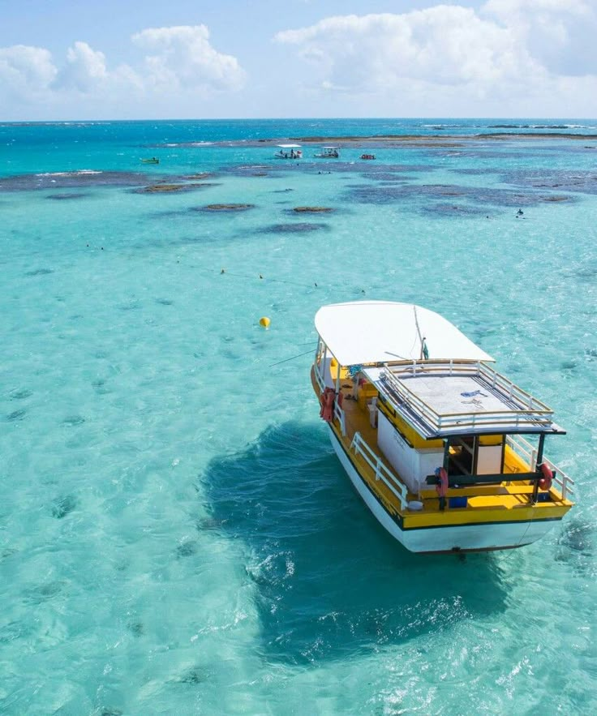
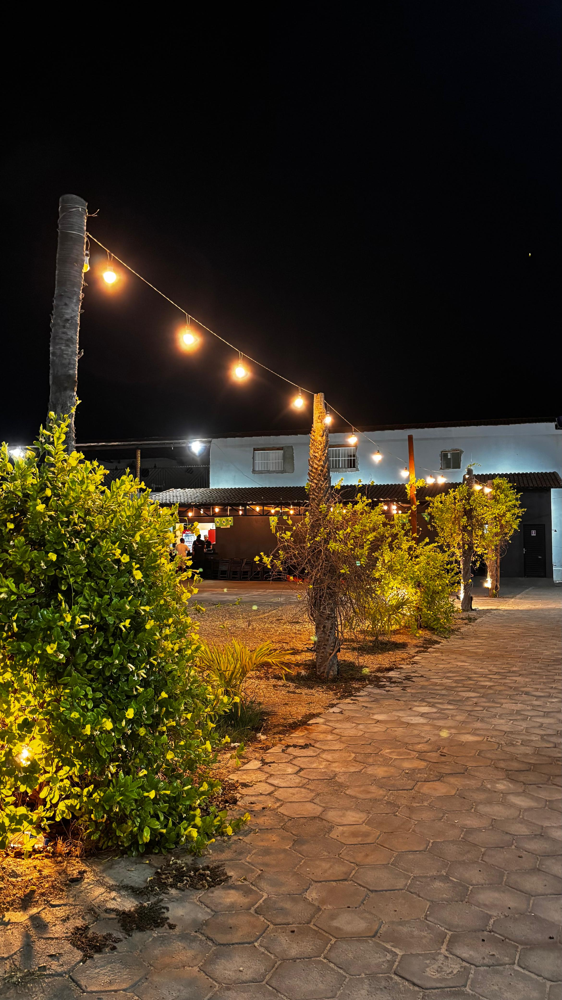

Maragogi - AL
A cidade de Maragogi faz parte das cidades praianas entre Recife e Maceió, e entre essas cidades temos Porto de Galinhas e São Miguel dos Milagres.
Aparecida - SP
A cidade em que se localiza a basílica Nossa Senhora Aparecida, a 2º maior igreja católica do mundo. A basílica também guarda a imagem original da Santa, do século XVIII.

Picos - PI
Uma das minhas cidades favoritas. Picos é a 3º maior cidade do Piauí e é uma cidade de interior bem movimentada, pricipalmente de noite.
